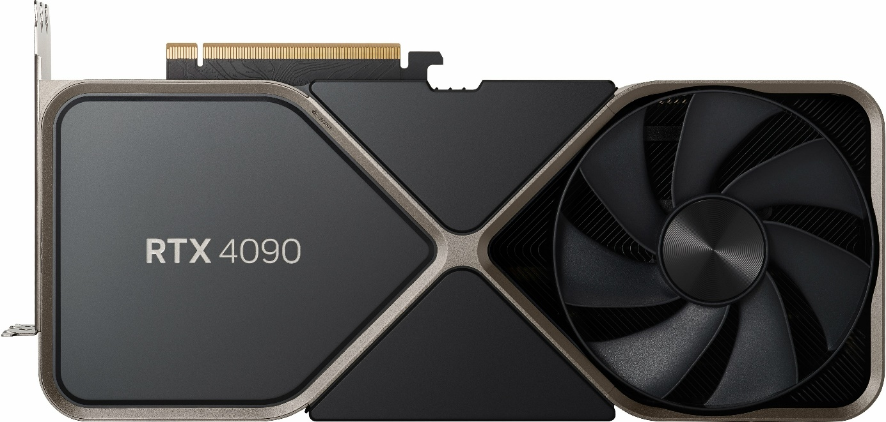

De Graphics Processing Unit ofwel GPU is de processor die het beeld berekent. Deze kan, ofwel intern ingebakken zijn in de processor maar deze kan ook verwerkt zitten in een externe grafische kaart. Het spreekt voor zich dat de tweede optie een krachtigere maar duurdere oplossing is.

In een desktop of laptop waar je CAD of CAE software gebruikt is een externe grafische kaart dan ook zeker geen luxe.
Vaak wordt echter voor beide oplossingen gekozen waarbij je de ingebouwde GPU gebruikt voor kantoortoepassingen zoals Word en Excel terwijl de externe grafische kaart wordt ingezet voor bijvoorbeeld gaming, foto en videobewerking of 3D modelleren.
Op zich is een GPU, net zoals een processor, in staat om rekenkundige bewerkingen uit te voeren. Het grote verschil is echter dat een GPU zeer efficiënt omgaat met grote hoeveelheden data zoals beelden. Die efficiëntie wordt bereikt door een hoge graad aan parallellisme. Verschillende taken kunnen tegelijkertijd worden uitgevoerd.
In een industriële computer ga je zelden een externe grafische kaart aantreffen want wat men gaat visualiseren is zeer weinig eisend van de grafische verwerkingseenheid. Een spanning, temperatuur, vulniveau of voortgang visualiseren is zeer eenvoudig met een label of eenvoudige afbeelding.
Wel staan we even stil bij de verschillende resoluties want deze maken wel een verschil. Als je kan kiezen dan ga je natuurlijk voor de hoogst mogelijke resolutie want dit maakt het beeld scherper. Er worden dan immers meer pixels getoond op een bepaalde oppervlakte.